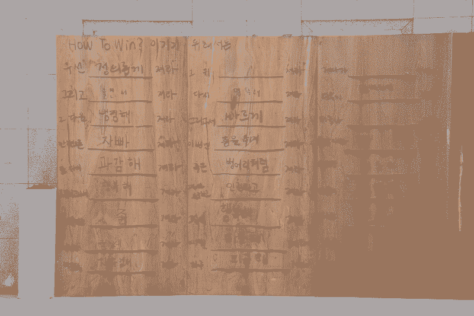
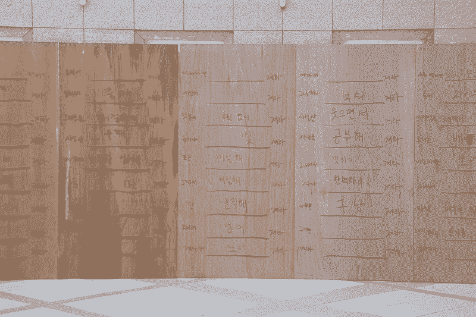
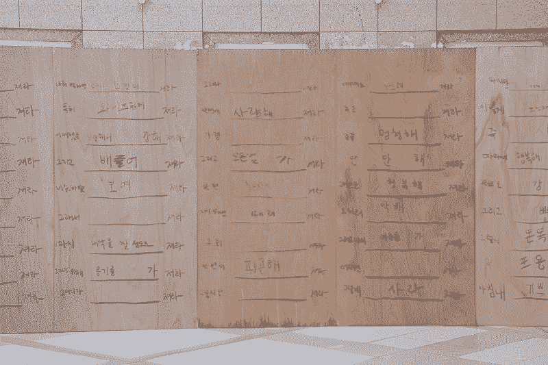
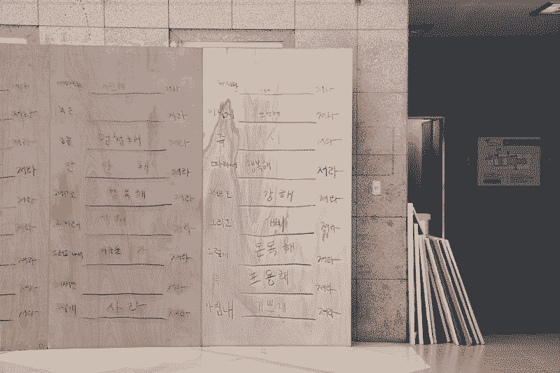

How to win
A participatory work inviting people to complete the phrase “To win, lose _______ ,” exploring the political and collective meaning of loss.
2022
how to win is a participatory installation in which visitors are asked to fill in the blank of the phrase “To win, you must lose ____,” written repeatedly on plywood panels. The work questions the dominant narratives of competition and success, suggesting that losing can also be an act of solidarity. Rather than celebrating individual victory, it reflects on the value of shared defeat—the idea that through the experience of losing together, we might someday learn how to truly win.



